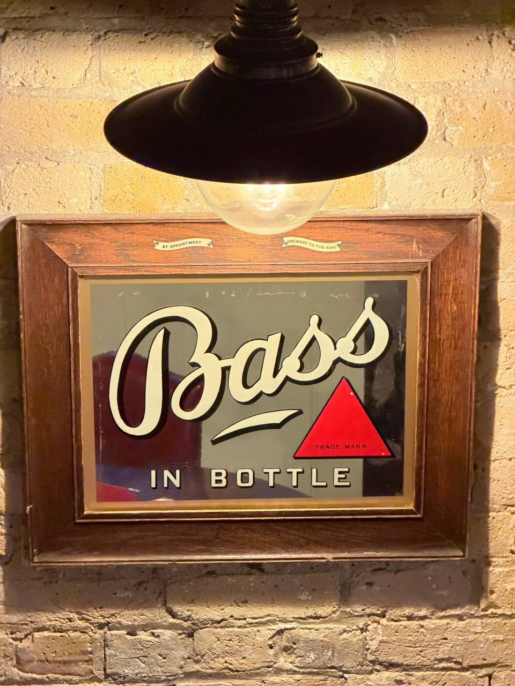

Bass Pale Ale: The Red Triangle That Took an English Beer Global
The red triangle on a bottle of Bass was the first trade mark registered in the United Kingdom.
A Burton brewery, a small red shape and a beer that crossed every ocean before its time.
Bass used that triangle as a mark of quality, a Victorian shorthand for a beer drinkers trusted whether they were in Britain, North America, Australia or somewhere else entirely. Beer writer Pete Brown, in Hops and Glory, calls Bass the first big consumer brand and the world's first multinational beer brand. That sounds like mythology until you look at what Bass became.
In the 19th century, Bass Pale Ale travelled the world at a time when global consumer brands barely existed. Its red triangle appeared in bars, adverts, bottle labels and paintings. It was one of the first symbols a drinker could recognise across borders.
But the Bass story began with trade, long before anyone talked about water chemistry or world conquest.
A Burton High Street brewery, 1777
Bass is usually dated to 1777, when William Bass bought a brewery on Burton High Street. Even that date is a little tidier than the reality. The Beertonian's account of the early years has him already carrying Burton beer to London and Manchester, and possibly holding brewing interests before the famous founding date. Burton was his home town, it sat between important markets, and the canals connected it to them. He can hardly have been thinking about sulphate-rich water or the future of pale ale. Only later would Burton's water become the thing that changed everything.
Britain's industrial brewers
Britain in the late 18th and early 19th century was in the middle of the industrial revolution, and brewing was part of it. Breweries were early adopters of steam power, hydrometers, microscopes and process control. Forget the quaint back room: the big breweries were among the great technical businesses of the age.
The first truly industrial beer was porter. London's porter breweries used scale to change the economics of beer. Instead of pubs brewing their own, it became cheaper and more reliable to buy from large specialist breweries. Porter became the beer of the industrial revolution.
Burton's path was different. It was a small inland town, but it had a reputation for beers that travelled and kept unusually well. Its early fame was for Burton brown ale, a sweet, nut-brown beer sent to the Baltic and Russia. But Burton's future would be pale.
The water changed everything
Burton water is hard and rich in sulphates, especially calcium sulphate, or gypsum. That minerality sharpened bitterness, dried the finish and helped create the vivid snap that made Burton pale ales so distinctive. Brew the same hoppy beer in London and Burton, and the Burton version tasted brighter, drier and more alive.
There is a perfect brewing legend about how pale ale found its way to Burton. The chairman of the East India Company supposedly fell out with Hodgson, the London brewer whose beer was being sent to India. He took Hodgson's beer to Samuel Allsopp in Burton and asked if he could brew something similar. Allsopp did, and his beer worked better. The recipe suited Burton water far more than London water, and Hodgson was soon pushed aside.
At first, this beer was simply pale ale. The name India Pale Ale only began appearing in the early 1830s, which is where Martyn Cornell puts it in Amber, Gold and Black. But India had a powerful hold over Britain. Civil servants and merchants returned from the East India Company rich, nostalgic and culturally changed. Newspaper adverts began selling India Pale Ale as the beer they had drunk overseas, now available at home.
Bass then entered the pale ale story and grew bigger than Allsopp. It had the water, the technology, the scale and eventually the branding. It also had the right beer for the right moment.
Coke malt, clear glass, and the look of progress
Technology changed how beer looked as well as how it tasted. Older malt was often dried over wood or hay, which could leave smoky flavours. The development of coke, coal with the gases burned out, allowed maltsters to control heat more precisely. That made pale malt possible at scale, and pale ale followed.
Then came glass. Sir Robert Peel's government repealed the glass excise duty in 1845, and over the following decades drinkers moved from pewter tankards to clear glasses. The look of beer mattered in a new way. Dark beer had hidden in metal. Pale ale shone in glass, and Bass was bright, bitter, sparkling and pale. It looked like progress.
A city-within-a-city
At its height, Bass was less a large brewery than an industrial estate, which is Jeff Alworth's framing on Beervana. Burton became a landscape of maltings, wells, cellars, steam power, cooperage, railway links, union rooms and distribution networks. This was British brewing at imperial scale: part brewery, part city-within-a-city.
The pale ales that made Bass famous were not like modern cask bitters. They were brewed strong, heavily hopped, and then aged until they were ready. Contemporary drinkers talked about beer being ripe or not ripe yet, as if it were fruit, cheese or wine.
That ripening could happen at sea. Beer bound for India might spend six months travelling by ship, conditioning as it went. But beer that stayed in Britain was aged too. St Pancras Station in London was built over an undercroft laid out for freight, and the freight it was laid out for was Burton beer.
The flavour would have been very different from modern Bass, though Boak & Bailey's survey of what is actually known about the recipe is a caution against being too confident about any of it. It was probably firm, bitter and malt-led rather than aromatic in the modern hop-forward sense. There may also have been Brettanomyces character. This was brewing before pasteurisation and before modern microbiology. A little Brett could have given the beer a dry, vinous, almost champagne-like edge, which may be why Victorian writers kept comparing great pale ale with sparkling wine.
So what happened to that beer?
For much of the 19th century, beer was still part of the working day. Manual workers might drink several pints while working. But as Britain moved towards office jobs, clerks and salaried workers could not drink seven or eight pints a day and still function. Beer had to become lighter.
Tax pushed it further. The Free Mash Tun Act of 1880 scrapped the malt tax and charged duty on the wort instead, by its original gravity, so from then on a stronger beer cost a brewer more to make. Average strengths fell. The First World War drove them down again through raw material shortages and government concern about drinking in the munitions towns, and they stayed low through much of the 20th century.
Bass evolved through the same forces. The strong, aged, export pale ale became a fresher, weaker, live cask beer. With the development of microbiology and a better understanding of yeast, beer changed again. Instead of long ageing and shipping, drinkers increasingly encountered living beer from hand pumps: fresh, bitter, lightly sulphurous and recognisably Burton.
That sulphurous note became known as the Burton snatch. Harry White, who joined Bass's R&D department in 1977 and later became its Director of Quality Assurance, described to us the old Burton character as something you could smell as well as taste. It was yeast, sulphur, fermenting rooms, carbon dioxide, alcohol, boiling wort and living beer. It was not always neatly controlled, but it gave the beer character.
Bass Charrington and the rest of the empire
By the time White arrived in Burton in January 1977, Bass was no longer simply the old Victorian pale ale brewery. It was Bass Charrington: a national brewing company created through mergers with Mitchells & Butlers, Charrington, Worthington, United Breweries and the lager ambitions that brought Carling Black Label into the story. The Bass name, the one with the most prestige, went on the front of it. The company beneath was a patchwork of older brewing empires. On paper, it was a modern brewing giant. In reality, it was still learning how to be one.
White joined the R&D department in Burton High Street, close to the breweries themselves. Bass still occupied a large part of the town: breweries, maltings, distribution yards, water systems and engineering infrastructure. Bass was most of what Burton did.
What happened to the empire
The dismantling was done by other people's mergers and other people's competition lawyers. Charrington's Anchor Brewery in Mile End had already stopped brewing in January 1975. Most of it came down, and the land is now the Anchor Retail Park. The pubs went in 1997, to a buyer who turned them into Punch Taverns. In 2000 the brewing business was sold to Interbrew of Leuven, since become AB InBev through its mergers with Brazil's AmBev and St Louis-based Anheuser-Busch, and what was left of the company went to Six Continents.
The European competition regulator would not let Interbrew keep all of it. In 2001 the Burton brewery and a set of brands, Charrington among them, went instead to Coors of Golden, Colorado, now Molson Coors. Coors bought the Mitchells & Butlers brewery at Cape Hill in Smethwick in February 2002 and shut it by the end of that year. Six Continents split in two in 2003, and the half that held the pubs took the Mitchells & Butlers name, which is why a Victorian Birmingham brewer is today a listed pub company that brews nothing.
The brands came out of it better than the breweries. London beer writer Des de Moor's history of the Charrington brewery follows what survived: Toby Bitter still turns up in keg, now at 2.8%, and in 2015 Steve Wellington recreated Charrington IPA with Molson Coors' consent at the Heritage Brewing Co, then housed in the National Brewery Centre in Burton, using a vintage recipe at 4.5% and the original Charrington yeast. Heritage went on to revive Charrington's Oatmeal Stout at 4%. The Centre itself closed on 31 October 2022, and Heritage's brewing moved out with it.
Bass today: not dead, just difficult
Bass should probably have disappeared by now. It is a tiny brand compared with what it once was. Roger Protz puts the heyday at close to a million barrels of Draught Bass a year, and the figure under AB InBev's ownership at 30,000. It is barely visible in the portfolio of the multinational that owns it, and completely detached from the old Bass company that made its name. Yet it keeps refusing to die.
That is because Draught Bass has become something stranger than a normal legacy beer. It is a cult cask ale: loved by drinkers who know where to find it, discussed obsessively online, and still capable of stopping a pub conversation when a pint is properly kept.
Its modern distribution is patchy, a long way from national in the old Bass sense. Phil Mellows, writing for Pellicle in "No Treble: The Inextinguishable Appeal of Draught Bass", describes Draught Bass as a regional survivor: strongest in the East Midlands, especially Staffordshire, Derbyshire and Leicestershire, with trails into the West Country, Wales and scattered outposts elsewhere. In 2018, Ian Thurman and other Bass drinkers began crowdsourcing sightings because they feared the beer might disappear. They found only around 350 pubs with Bass permanently on the pumps. Mellows reported in 2023 that the list was still being updated, and drinkers still use it like a treasure map.
That drinker network matters. Most of what passes for marketing around Bass is run by its drinkers: National Bass Day, Best Bass in Burton, the Facebook group and the Honourable Order of Bass Drinkers, founded in 1967. They are doing the work a brewer would usually do.
The number of places serving it has been rising again. Protz reported in December 2025 that Draught Bass had passed 1,000 outlets, almost trebling over two years, after AB InBev put new pump clips, branded glasses and merchandise behind it. The irony is pure Bass: the brand belongs to AB InBev, and the Burton plant that brews it belongs to Carlsberg, a global rival.
What does it taste like today? At its best it is nothing spectacular in the modern craft sense, and better for it. It tastes like the ideal version of an English bitter: dry, gently fruity, bitter at the finish, with caramel malt through the middle and, when fresh, a sulphurous Burton nose that can fade as the cask settles.
Ron Pattinson's account of a day at Marston's in Burton in March 2024 captures that split beautifully. A cask open for a few days was dry, bitter and clean. A freshly tapped sample was full of sulphur, softer in perceived bitterness and more obviously Burton. Later, at the Roebuck, the sulphur had almost gone and the beer was exactly what Bass drinkers chase: dry, bitter and very good.
Draught Bass, looked after properly, disappears too quickly. The first sip has texture and fruit, the middle has malt, the finish has bitterness, and then somehow the glass is empty.
Some Bass pubs have become minor pilgrimage sites: the Coopers Tavern in Burton, Dyffryn Arms in Pembrokeshire, the Sun Inn in Stockton-on-Tees, the Express Tavern by Kew Bridge, and Burton pubs such as the Roebuck and Devonshire Arms. Mellows names all but the first. The Coopers Tavern is on Cross Street in Burton and is in our own catalogue. The geography is uneven, but that is part of the appeal. Finding a good pint of Bass still feels like finding something.
Draught Bass also has its own folklore. Mellows notes that it comes in 10-gallon casks rather than standard nine-gallon firkins. Some publicans and former Bass people say it benefits from time in the cellar to round off. Harry White calls that a myth, arguing that Bass was designed to be robust and reliable by the time it reached the pub. Either way, the argument is part of the beer now.
Modern Bass is compelling because everything is against it. It is owned by a global brewer, brewed under contract, barely promoted for decades, regionally scattered and technically diminished from its Victorian ancestors. Phil Mellows ended his Pellicle piece wondering whether it had wriggled loose of its corporate constraints and come to belong to its drinkers. We think it has. Draught Bass now belongs less to its owner than to the drinkers who know where to find it.
What the red triangle still means
Most British beer brands you see today are descended from companies that no longer exist, owned by companies who didn't make them, brewed under licences signed in boardrooms half a world from Burton. Bass is just an unusually clear example, because the brand outran the brewery so completely. The Anchor Brewery is a retail park. The Burton brewery belongs to Molson Coors. The brand belongs to AB InBev. Draught Bass is contract-brewed in Burton in a plant Carlsberg owns. The pubs are listed on the London Stock Exchange under the Mitchells & Butlers name. The Charrington yeast outlived the company that bred it.
And the red triangle still works.
The triangle was also the calling card of a brewery that held a Royal Warrant, and Bass advertised it on framed mirrors for publicans to hang behind the bar. The "By Appointment / Brewers to the King" wording on one of those mirrors places it in a reign with a king on the throne: Edward VII (1901–10), George V (1910–36), Edward VIII (1936) or George VI (1936–52). They still turn up at auction, and now and then in a working pub.
One hangs in the City of London, at 29–31 Mitre Street, over a tap wall that didn't include Bass when we photographed it in June 2026. The pub was the Craft Beer Co's then. It is now The Catherine Eddowes.

FAQ
Why is the red triangle on Bass Pale Ale famous?
Bass registered the red triangle as the United Kingdom's first registered trade mark on 1 January 1876. By that point it was already in use on bottles, casks and adverts, and had travelled the world along with the beer. Pete Brown has called Bass the first big consumer brand and the world's first multinational beer brand.
Why did pale ale come from Burton upon Trent?
Burton's well water is unusually rich in sulphates, especially calcium sulphate (gypsum). That sharpens bitterness, dries the finish and pushes hop character forwards. Breweries elsewhere took to copying Burton's water with mineral additions, a process still called Burtonisation.
Who owns Bass now?
The Bass brand is retained by AB InBev. The historic Burton brewery passed to Coors, now Molson Coors, after the 2001 competition ruling. Draught Bass has since been contract-brewed in Burton at the former Marston's brewery, now under Carlsberg ownership. Boak & Bailey have traced which format is brewed where in "Where is Bass From?". The old Bass pub estate became Mitchells & Butlers.
Is Draught Bass still brewed?
Yes. Draught Bass survives as a 4.4% cask beer, brewed in Burton under contract for AB InBev. Its availability is patchy but improving: strongest in the East Midlands, with trails into the West Country and Wales. Recent reports put it in more than 1,000 outlets, helped by renewed trade support and a loyal drinker following.
A separate Charrington IPA was recreated in 2015 by Steve Wellington at Heritage Brewing Co, then housed in the National Brewery Centre in Burton, using a 4.5% ABV vintage recipe and the original Charrington yeast strain.
What does Draught Bass taste like today?
At its best, Draught Bass is a classic English bitter: dry, gently fruity, caramel-malted and firmly bitter, with a sulphurous Burton note when fresh. That sulphur softens as the cask settles, leaving a drier, balanced beer that drinks easily.
Ron Pattinson, tasting it at Marston's in 2024, found the same cask sulphurous and full when freshly tapped and dry and bitter a few days on. Kept properly, the glass empties without you noticing, which is the whole point.
What is the "Burton snatch"?
A subtle sulphurous note in Burton-brewed beer caused by the area's hard, sulphate-rich water. It is the smell of the brewery as much as of the beer: yeast, sulphur, fermenting rooms, carbon dioxide and wort. For many drinkers it is the defining marker of a genuine Burton ale.
The triangle is still on the label. Most of the rest has been rearranged.
For more on the brewing forces that shaped (and weakened) British pale ales, from strength taxes to glass duty to sparkler bias, see the companion essays below.
The Sparkler Question, on the small nozzle that re-shapes a cask pint and still divides drinkers north and south.